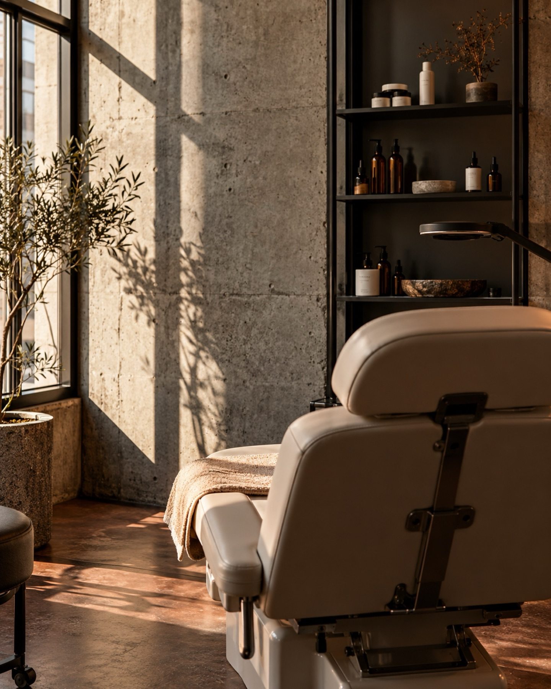
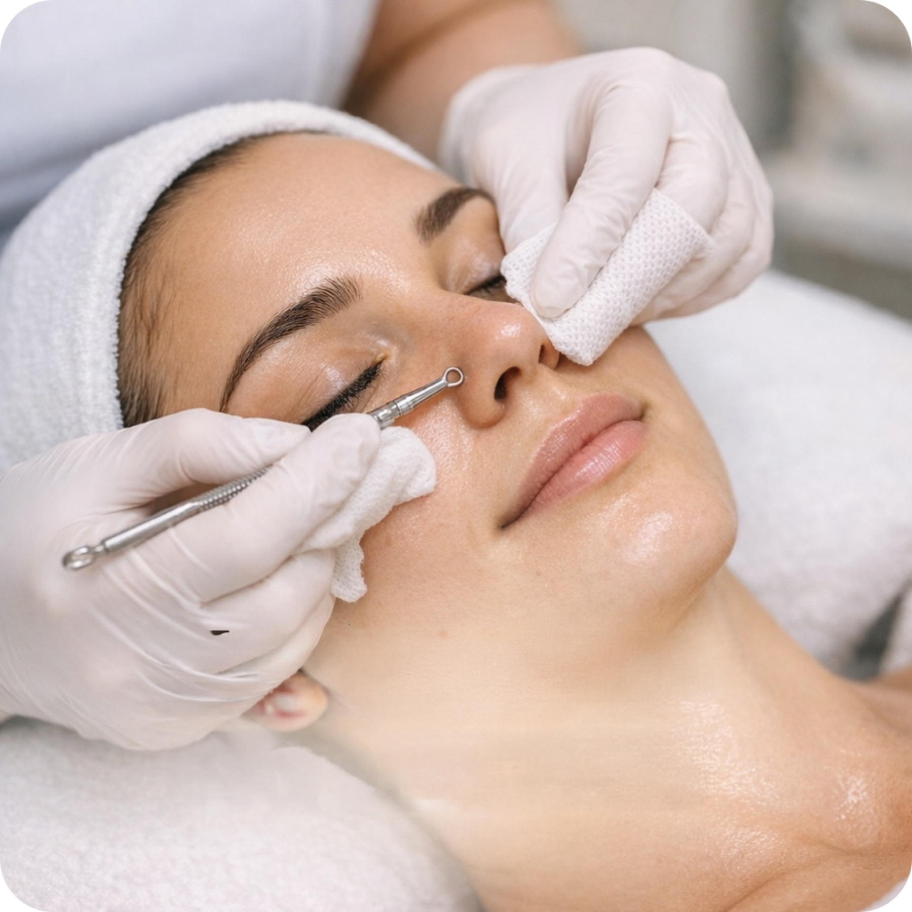
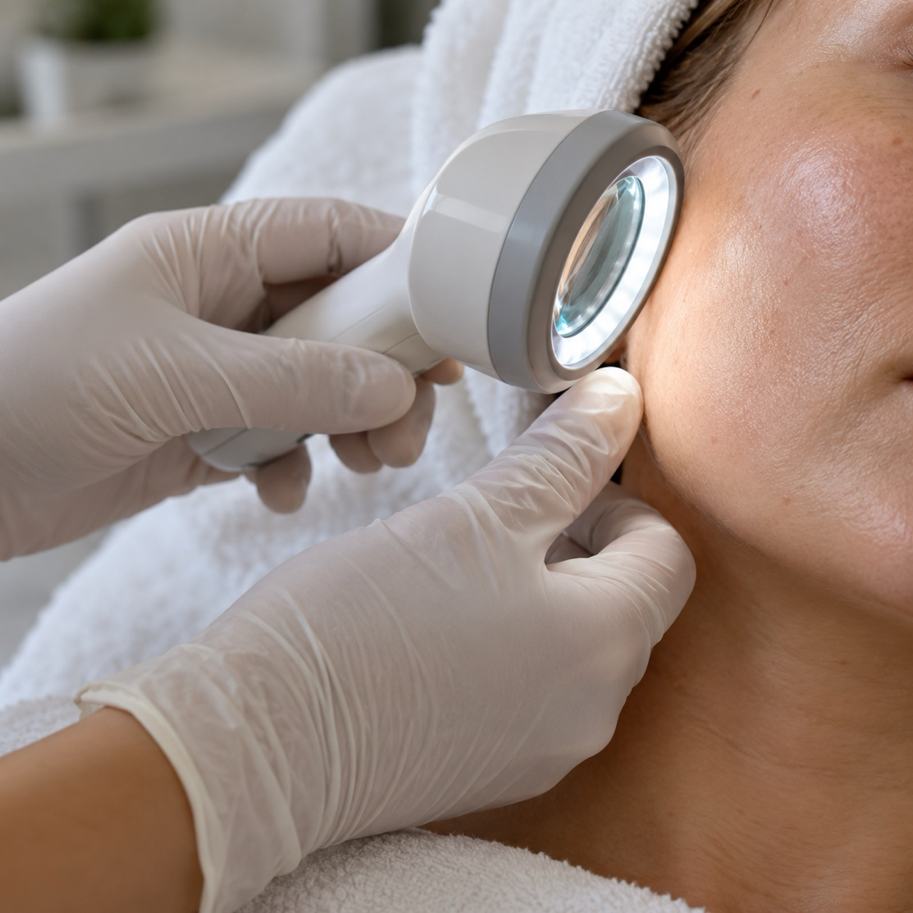

Klare Haut.KlareKante.
Akne- und Hautexpertin in Hannover. Wir suchen die Ursache, nicht das nächste Produkt.

Leistungen
Haut verstehen. Gezielt behandeln.
01Behandlung unreiner Haut / Akne
Individuelle Hautanalyse und ganzheitliche Strategien bei Akne, unreiner Haut und stillen Entzündungen. Nicht nur oberflächlich, sondern an der Ursache.
- Spezialisierung auf Akne & Problemhaut
- Ganzheitlicher Ansatz (innen & außen)
- Individuelle statt standardisierte Behandlungen
- Fokus auf nachhaltige Ergebnisse statt kurzfristiger Effekte
02Hautanalyse
Beim ersten Termin machen wir eine ausführliche Haut- und Anamneseanalyse. Ich schaue mir dein Hautbild genau an, bespreche deine Pflegeprodukte, Ernährung, Medikamente, Stress und mögliche Auslöser. So erkennen wir, welche Art von Akne vorliegen könnte und welche Faktoren bei dir eine Rolle spielen.
- Was deine Haut wirklich braucht
- Welche Ursachen hinter deinen Hautproblemen stecken
- Wie wir deine Haut nachhaltig ins Gleichgewicht bringen
Warum wir
Klare Strategie statt Produkt-Chaos
Ursachenfokus
Viele Behandlungen setzen nur an der Hautoberfläche an – doch die eigentlichen Ursachen bleiben bestehen. Wir schauen genauer hin.
Ganzheitlich
Ich betrachte deine Haut nicht isoliert – sondern als Spiegel deines gesamten Körpers.
Individuell
Individuelle statt standardisierte Behandlungen, abgestimmt auf dein Hautbild.
Betreuung
Wir kontrollieren regelmäßig deinen Fortschritt mit Fotos und Anpassungen und arbeiten strukturiert über mehrere Wochen.
Expertise trifft auf Leidenschaft für deine Haut
Kristina Helmuth
Medizinische Kosmetikerin / Derma-Kosmetikerin
Während meiner ersten Ausbildung in der Gastronomie bekam ich selbst Akne und weiß daher aus eigener Erfahrung, wie belastend Hautprobleme sein können.
2016 habe ich meine Ausbildung zur Kosmetikerin als Jahrgangsbeste abgeschlossen. Seitdem habe ich mich auf Akne, Problemhaut und ganzheitliche Hautgesundheit spezialisiert. Zusätzlich wurde ich zweifach ärztlich geprüft und arbeite im Bereich der medizinischen / Derma-Kosmetik.
Viele Hautprobleme entstehen nicht nur auf der Haut — sondern im Körper. Deshalb habe ich 2023 mein Studium zur Ernährungsfachwirtin begonnen und bin bereits staatlich geprüfte und zugelassene Ernährungsberaterin.
Heute arbeite ich zusätzlich mit Labordiagnostik, um noch tiefer an die Ursachen zu gehen — z. B. bei Entzündungswerten, Hormonen, Darmgesundheit oder Stressmanagement.
Ich behandle nicht nur die Haut – ich bringe den Körper in Balance.
Ablauf deines Termins
Aknebehandlung mit System
Analyse statt Raten
Beim ersten Termin machen wir eine ausführliche Haut- und Anamneseanalyse. Ich schaue mir dein Hautbild genau an und bespreche Pflegeprodukte, Ernährung, Medikamente, Stress und mögliche Auslöser.
Basis stabilisieren
Wir beruhigen deine Haut, vereinfachen deine Pflege und wählen gezielte Behandlungen, die zu deinem Hautzustand passen. Viele Akneformen verbessern sich bereits durch eine richtige Routine und professionelle Behandlungen.
Ursachen gezielt prüfen
Wenn nötig, schauen wir tiefer: Zum Beispiel auf Entzündungsniveau über einen Omega-3-Test oder auf Darm, Ernährung oder hormonelle Muster. Tests machen wir nur, wenn sie wirklich sinnvoll sind.
Individueller Plan und Betreuung
Du bekommst einen klaren Maßnahmenplan für Zuhause und wir kontrollieren regelmäßig deinen Fortschritt mit Fotos und Anpassungen, bis wir deine Haut langfristig stabilisieren.
Einblicke
Studio und Behandlung


Häufige Fragen
FAQ
Wie bereite ich mich vor?
Komm am besten ohne Make-up und bring die Pflegeprodukte mit, die du aktuell benutzt. Auch Medikamente und mögliche Auslöser, die dir aufgefallen sind, besprechen wir gemeinsam.
Wie lange dauert ein Termin?
Beim ersten Termin nehmen wir uns bewusst Zeit für Hautanalyse und Gespräch. Wie viele Termine danach sinnvoll sind, richtet sich nach deinem Hautbild.
Was muss ich nach der Behandlung beachten?
Du bekommst einen klaren Maßnahmenplan für Zuhause. Er sagt dir, welche Pflege jetzt zu deiner Haut passt und worauf du in den nächsten Tagen achten solltest.
Was gilt, wenn ich einen Termin absagen muss?
Gib uns bitte so früh wie möglich Bescheid, telefonisch oder per Nachricht auf Instagram. So können wir den Termin neu vergeben.
Kontakt und Anfahrt
Bereit für einen strukturierten Weg zu gesunder Haut?
Albrecht-Schaeffer-Weg 12
30455 Hannover